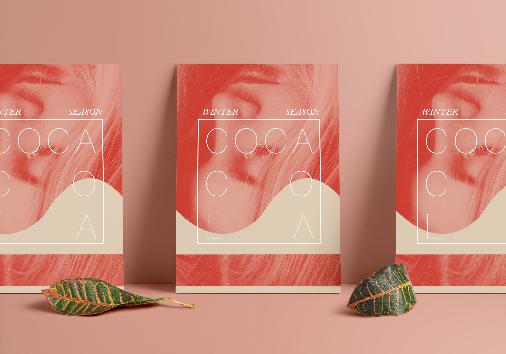
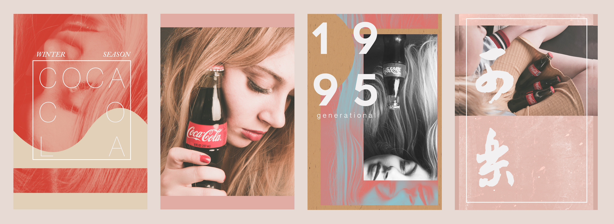
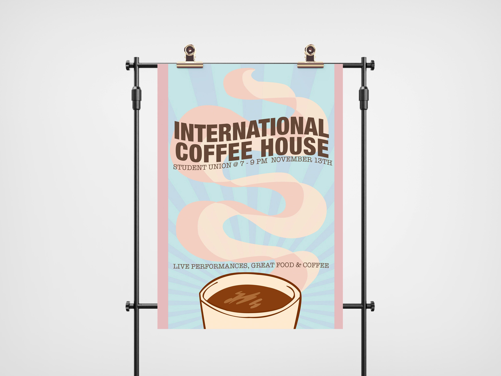

With Taylor University's TSO Media Marketing, I designed and led creative marketing for over 7 large campus-wide events including student body elections reaching 1,500+ students.
While producing multimedia design including posters, digital ads, and event decoration, I also collaborated with teams across the campus to craft innovative solutions with their end goal in mind.



I worked heavily in the Adobe Creative Suite with Photoshop, Lightroom, InDesign, and Illustrator to create digital and print designs that would be distributed to all of campus.